Most existing 3D assembly methods treat the problem as pure pose estimation, rearranging observed parts via rigid transformations. In contrast, human assembly naturally couples structural reasoning with holistic shape inference. Inspired by this intuition, we reformulate 3D assembly as a joint problem of assembly and generation. We show that these two processes are mutually reinforcing: assembly provides part-level structural priors for generation, while generation injects holistic shape context that resolves ambiguities in assembly. Unlike prior methods that cannot synthesize missing geometry, we propose CRAG, which simultaneously generates plausible complete shapes and predicts poses for input parts. Extensive experiments demonstrate state-of-the-art performance across in-the-wild objects with diverse geometries, varying part counts, and missing pieces.
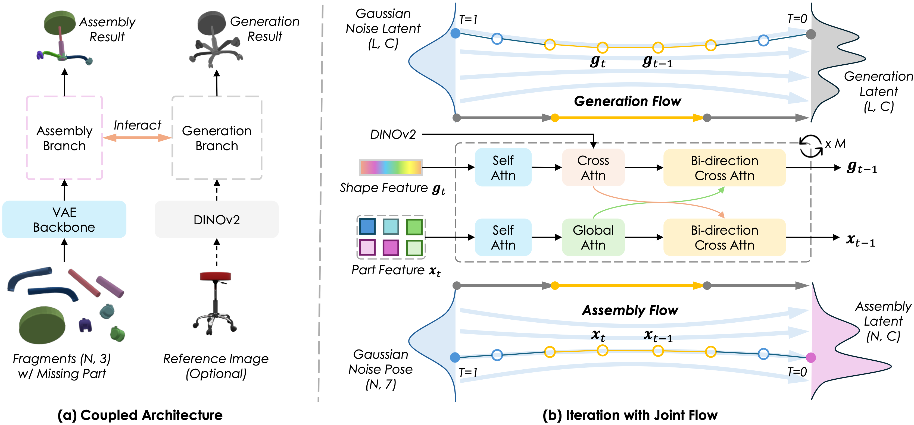
Overall illustration of CRAG. Our model consists of two interacting branches: an Assembly Branch that predicts the pose for each part via SE(3) flow matching, and a Generation Branch that synthesizes the complete shape via flow matching. A Joint Adapter bridges these branches, enabling bidirectional information flow. We employ a two-stage training strategy: learning assembly first, and then jointly finetuning both tasks
Explore our 3D reassembly results interactively. The models below demonstrate how CRAG accurately aligns fragments across different material categories. You can rotate, zoom, and inspect the reassembled objects from any angle.
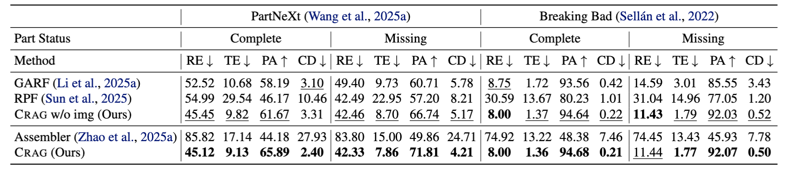
Each row is the same shape reassembled by four methods. Corresponding parts share the same color across the entire row. Models are loaded lazily as you scroll — orbit any viewer to inspect the assembly from a different angle.
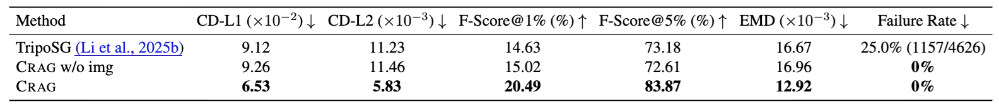
Each row shows the unposed input parts, the reference image used to condition generation, CRAG’s generated complete shape, and the ground truth. Parts in the Condition viewer carry baked macaron colors so individual fragments are easy to track. Models load lazily as you scroll — orbit any viewer to inspect from a different angle.
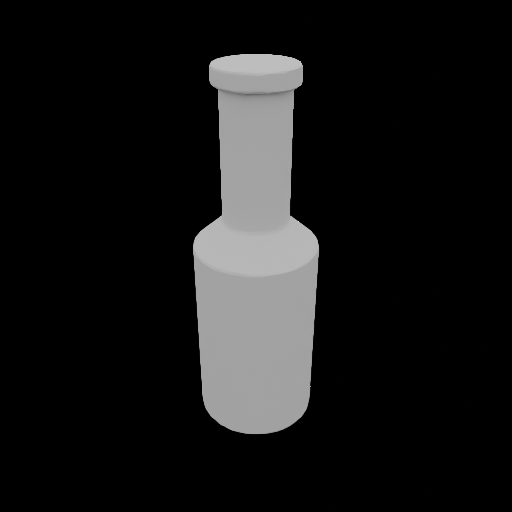
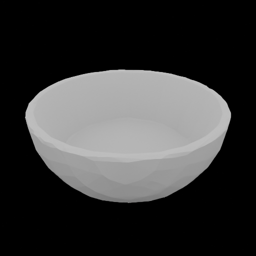
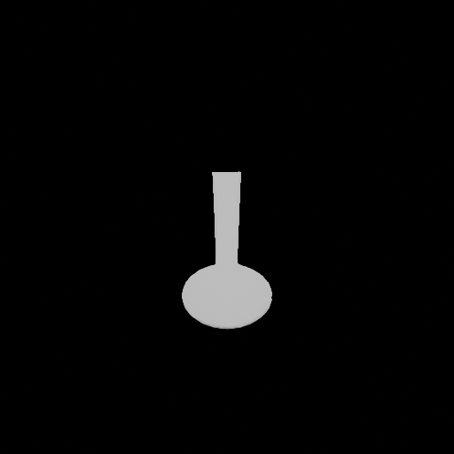
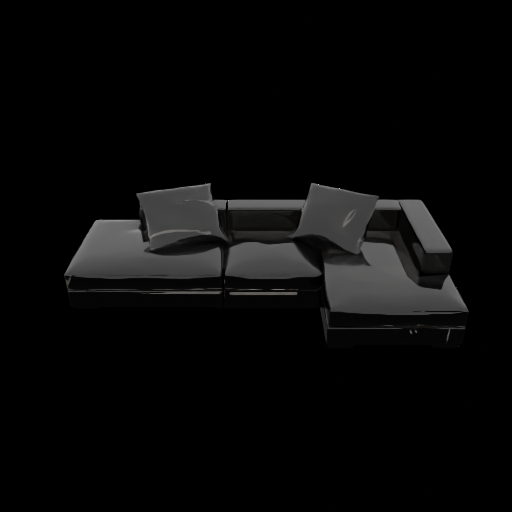
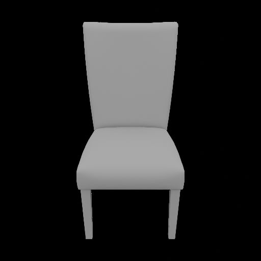
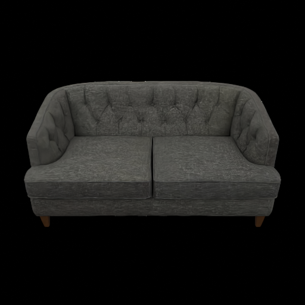
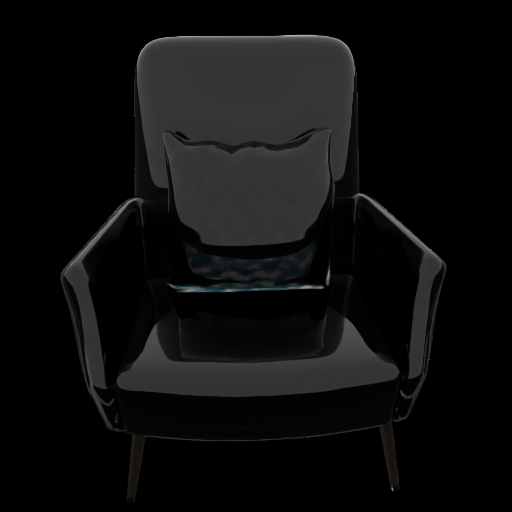
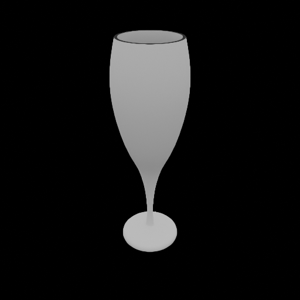
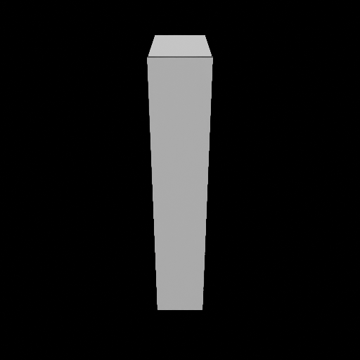
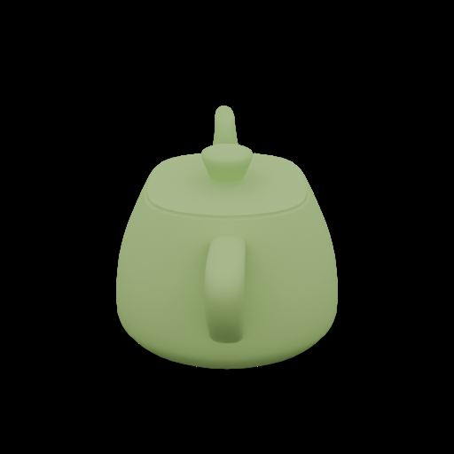
Same four-column layout, but here CRAG receives no reference image — the generation is driven purely by the part-level evidence on the left. The Image column is therefore marked N/A.
@inproceedings{jiang2026CRAG,
title={CRAG: Can 3D Generative Models Help 3D Assembly?},
author={Zeyu Jiang and Sihang Li and Siqi Tan and Chenyang Xu and Juexiao Zhang and Julia Galway-Witham and Xue Wang and Scott A. Williams and Radu Iovita and Chen Feng and Jing Zhang},
year={2026},
booktitle={International Conference on Machine Learning (ICML)}
}